gaccio è un nabbo
il gaccio è riconosciuto in tutto il mondo per essere un nabbone, questo audio è la prova:sono state riportate foto del gaccione nabbone:
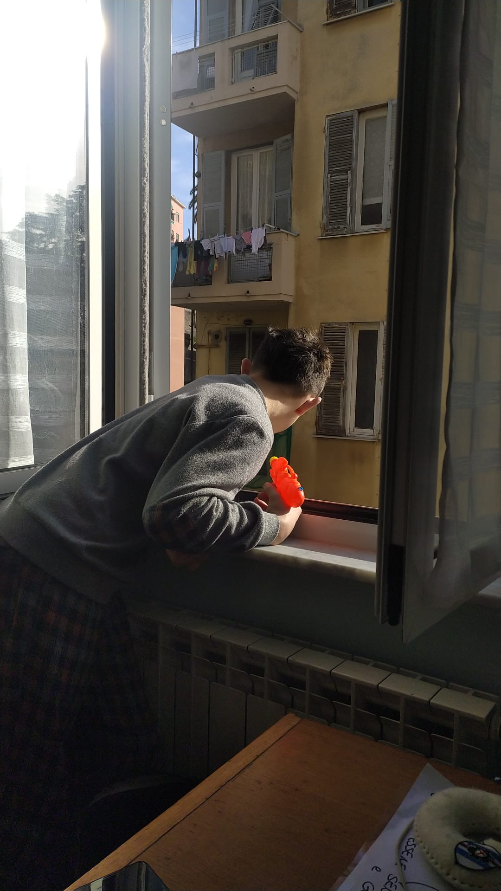 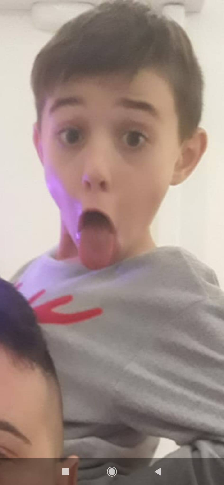 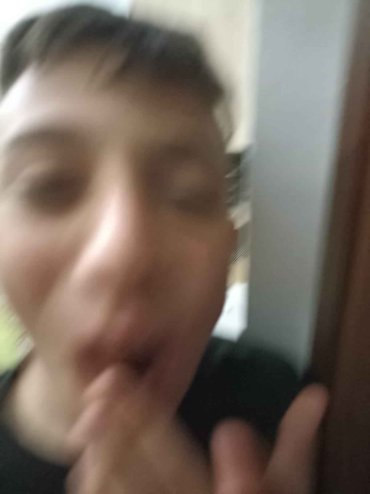 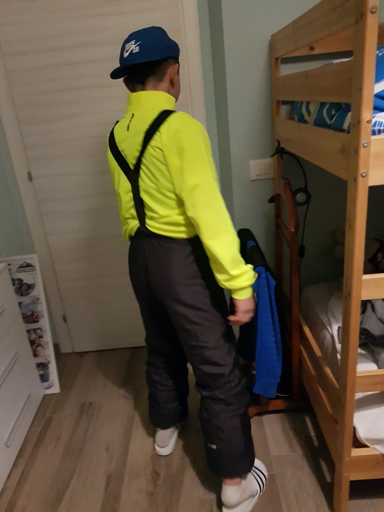
è stata ritrovata la versione femmina del nabbo gaccione, potrebbero avere una stirpe ma la femmina non è così femmina (ha il cazzo)
foto riportata:
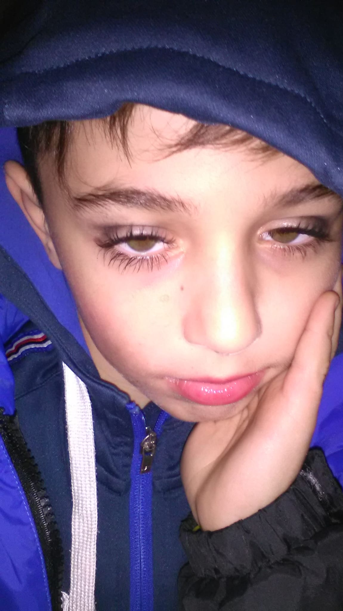
il gaccio nabbo a una family, una sorella, un padre, una madre, e due fratelli
le foto riportate sono poche e sono dei fratelli, del padre e della sorella
foto riportate:
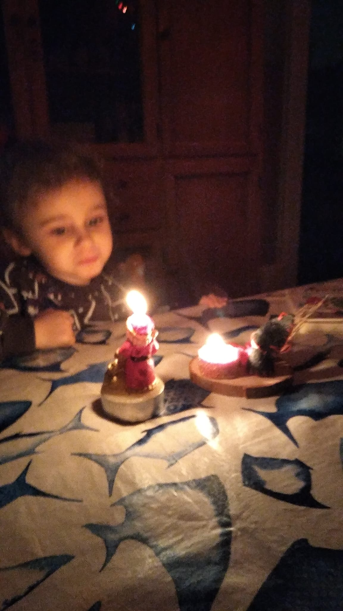 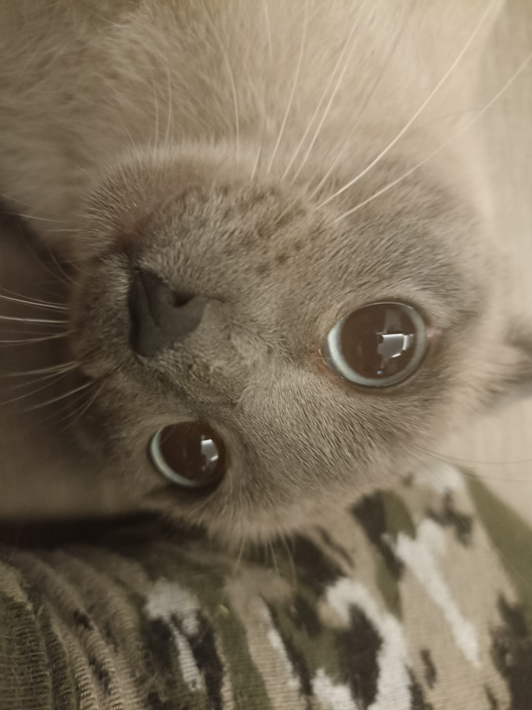
è stata filmata un incredibile danza d' accoppiamento del gaccio, la usa principalmente per i maschi
la danza:
anche se questa creatura nabba è quasi estinta è molto forte e resistente, non sono state riportate immagini ho video per dimostralro
ma l' ho provato sulla mia pelle, io sono più forte perchè sono il boss, ma il gaccio è forte lo stesso.
il gaccio nabbo è molto protettivo sui suoi simili questa ne è la prova:
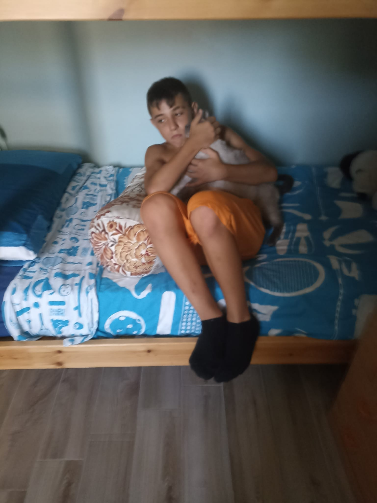
però capita anche al gaccio di prenderle, sopratutto con suo fratello più grande (jack (il mitico)).
sono stati riportati danni (non mortali) dal ultimo loro scontro
ecco un immagine dei danni sul corpo dell gaccio:
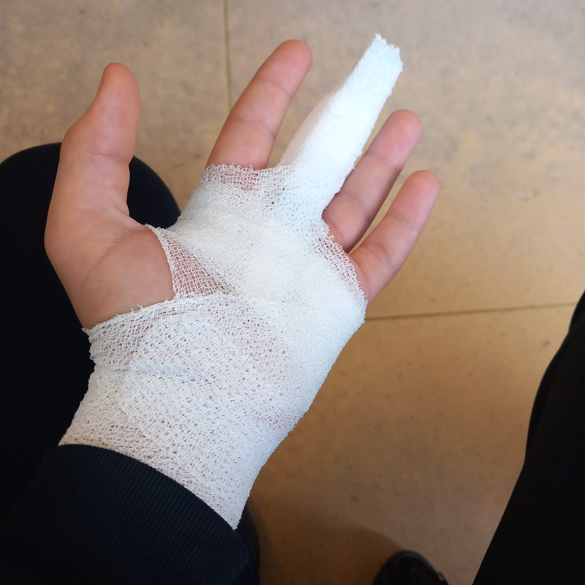
fortunatamente si stà riprendendo velocemente quindi non rischia l' istinzione
sono state riportate una foto intima (poco) del gaccio, per dimostrazione dobbiamo farla vedere
ecco la foto:
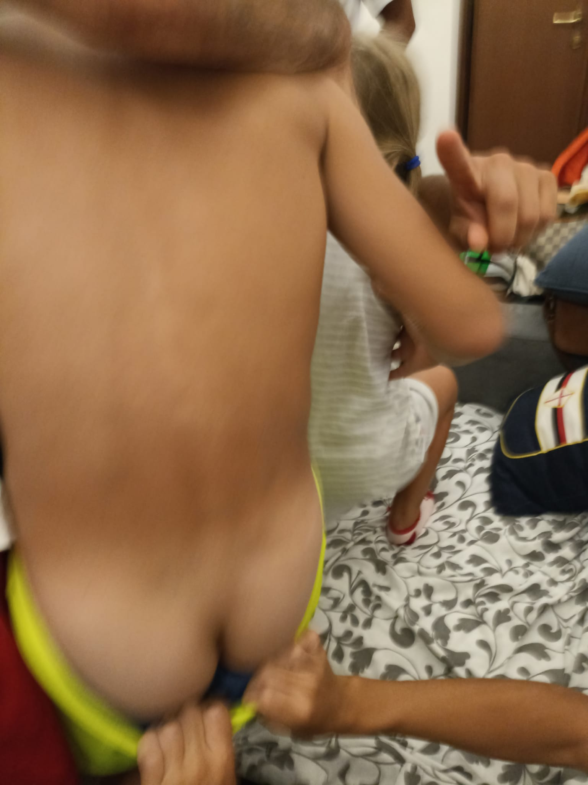
a togliere i vestiti a gacico era suo fratello un poco voglioso.
quando era paiccolo era stupidino ecco le prove:
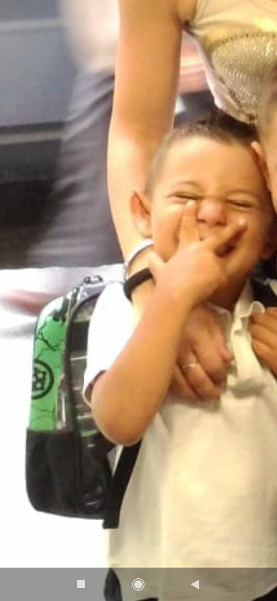 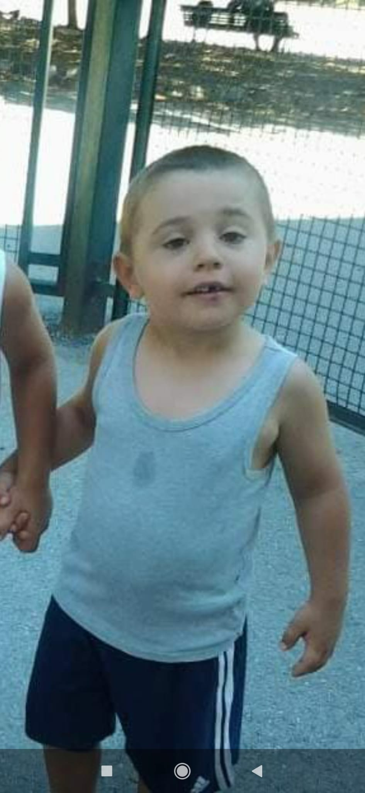
si è scoperto che il gaccio a un cazzo picolissimo, quando gioca si eccita e lo fa vedere, non abbiamo prove ma lo fa vedere alle persone
quando è voglioso (spesso).
tutta via il gaccio è un bravo ragazzo, e anche se litiga con suo fratello si voglione bene:

è stata riportata un incredibile foto unica del gaccio e la sua family:
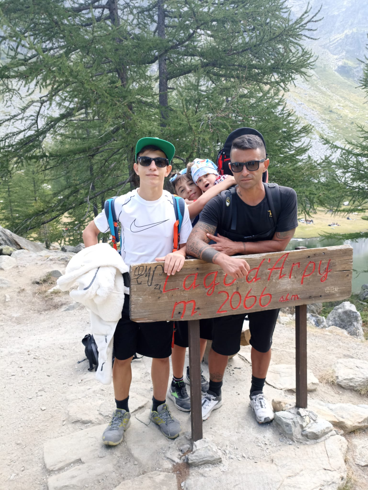
il gaccio a dimostrato (poche volte) di essere molto coraggioso e uomo
ecco un video spettacolare virale sul web del gaccio che si è dimostrato un uomo:
gaccio nabbo al mometo sta crescendo bene e forte, ma ci vuole più disciplina.
grande gaccione nabbone